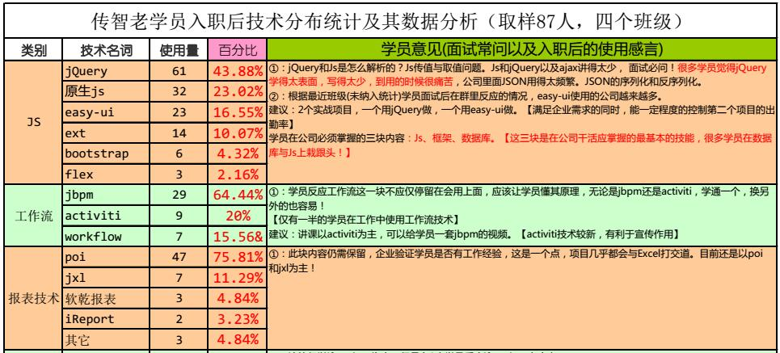

- 使用JQuery之前必须在head里面导入JQuery:
<script type="text/javascript" src="../js/jquery-1.8.3.js"></script>
- JQuery2.0及后续版本将不再支持IE6/7/8浏览器
- JQuery是一个JavaScript库,它兼容CSS3,还兼容各种浏览器.文档说明很全,有专门的.chm文件,应用详细,成熟插件多.
- jquery-1.8.3.js & jquery-1.8.3.min.js 的区别:前面一个有注释,.mim没注释
- jquery的加载比js加载快
- 技术分布统计
